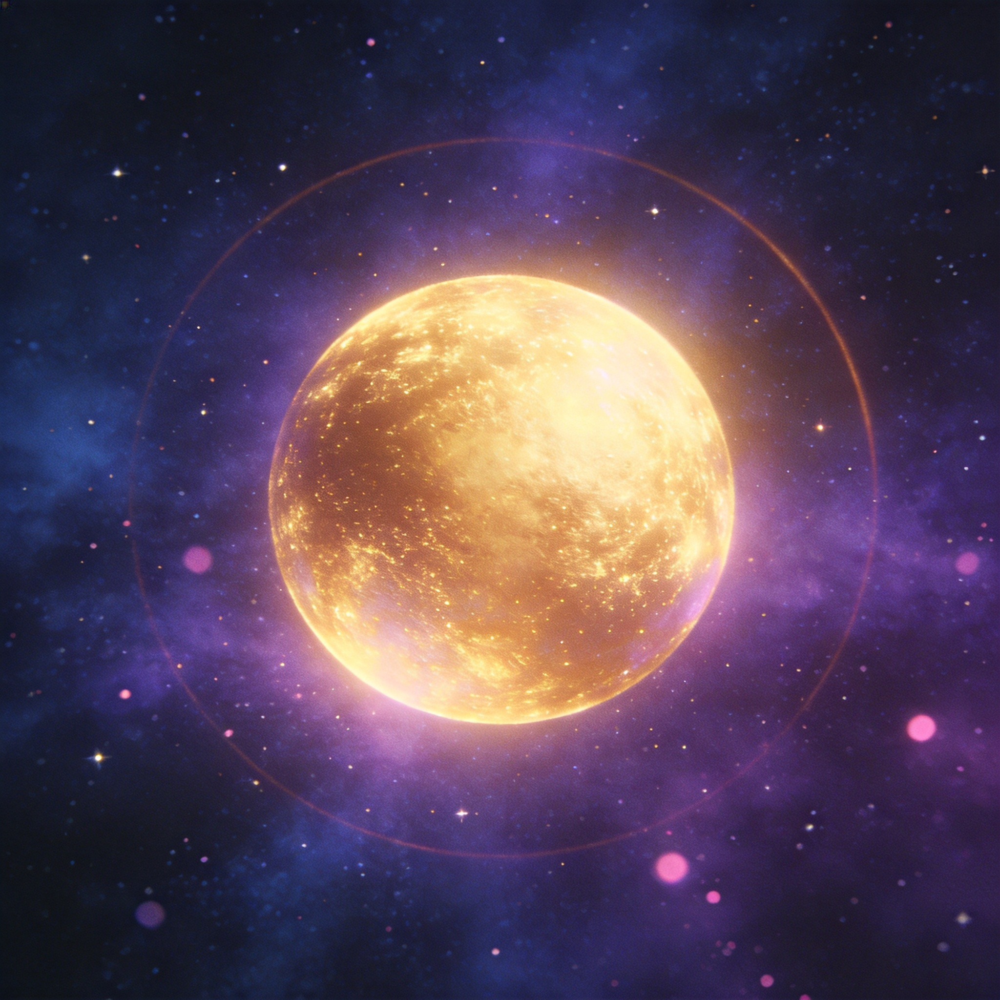
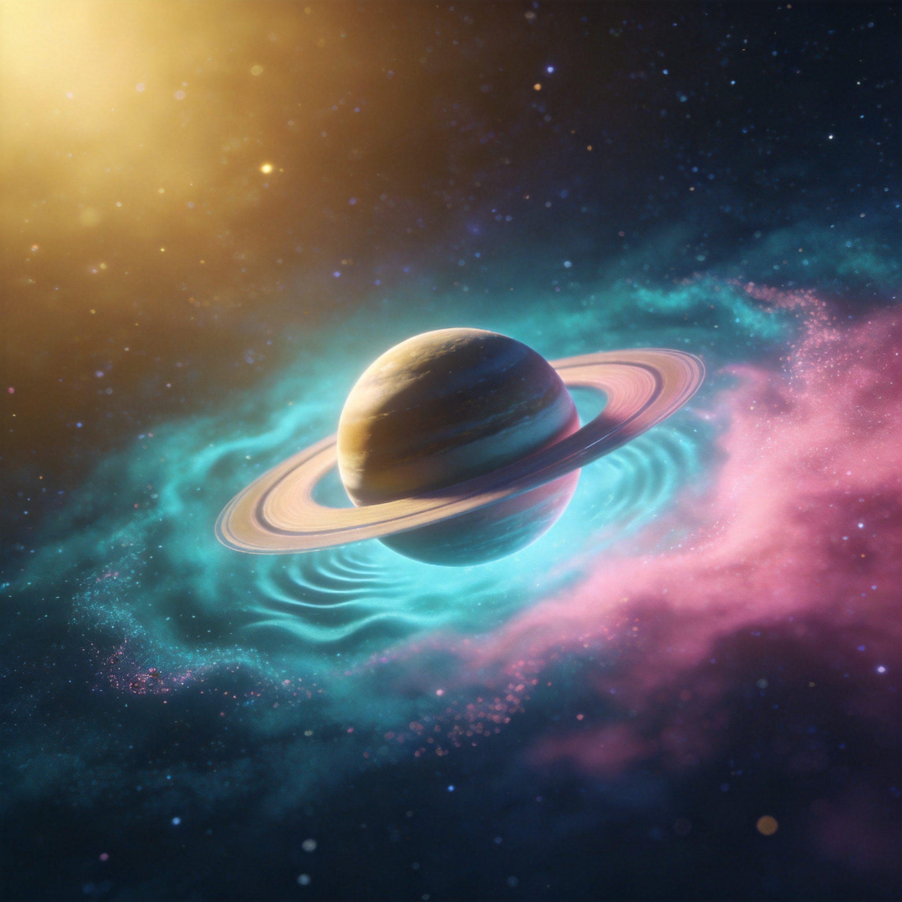
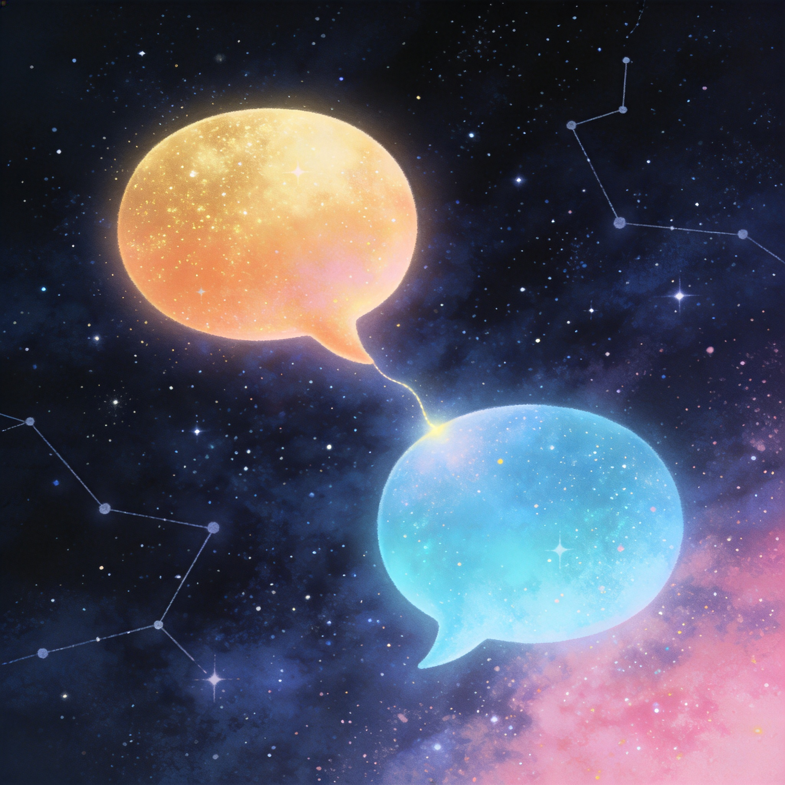
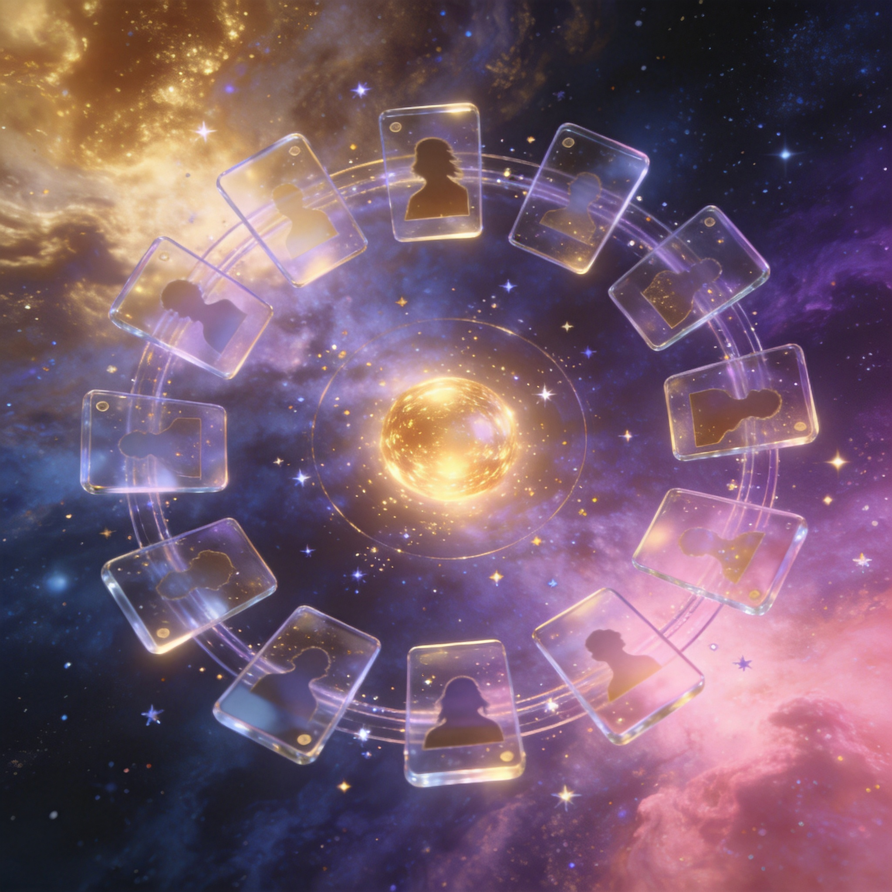
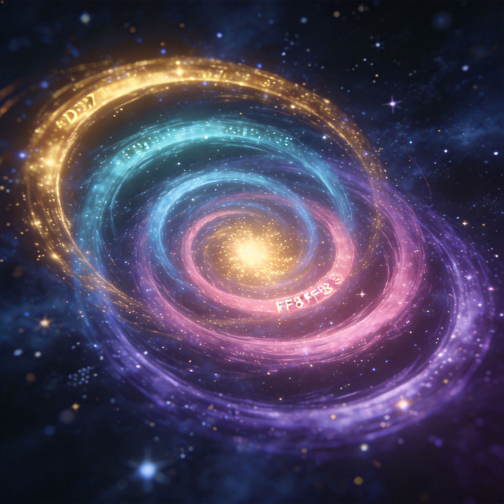
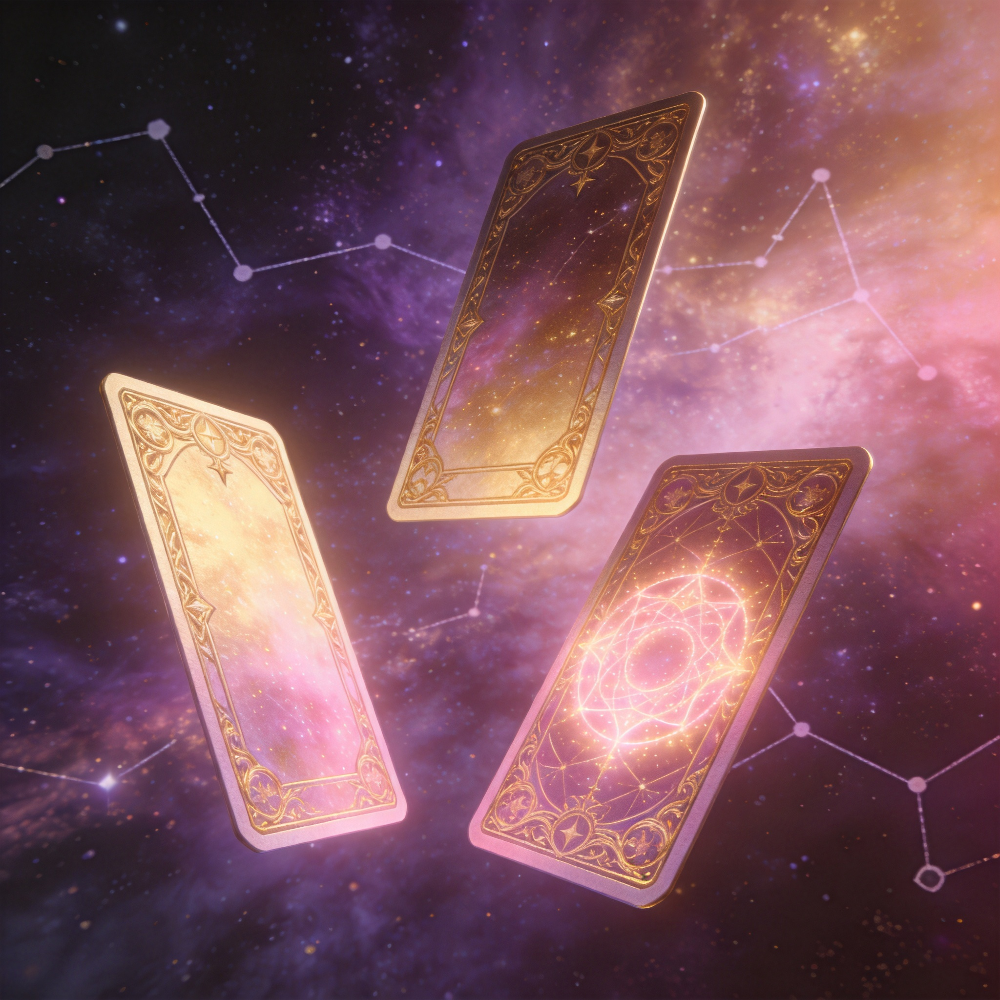
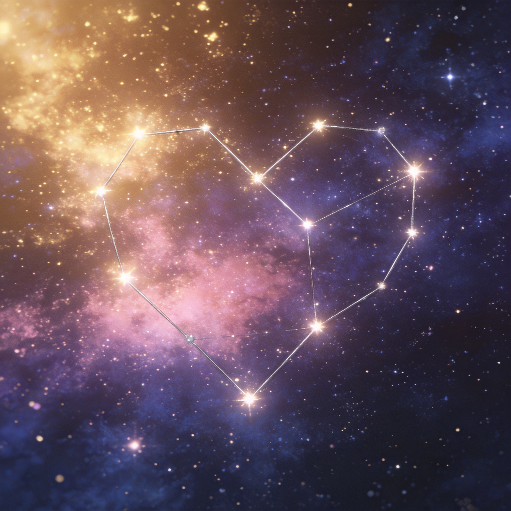
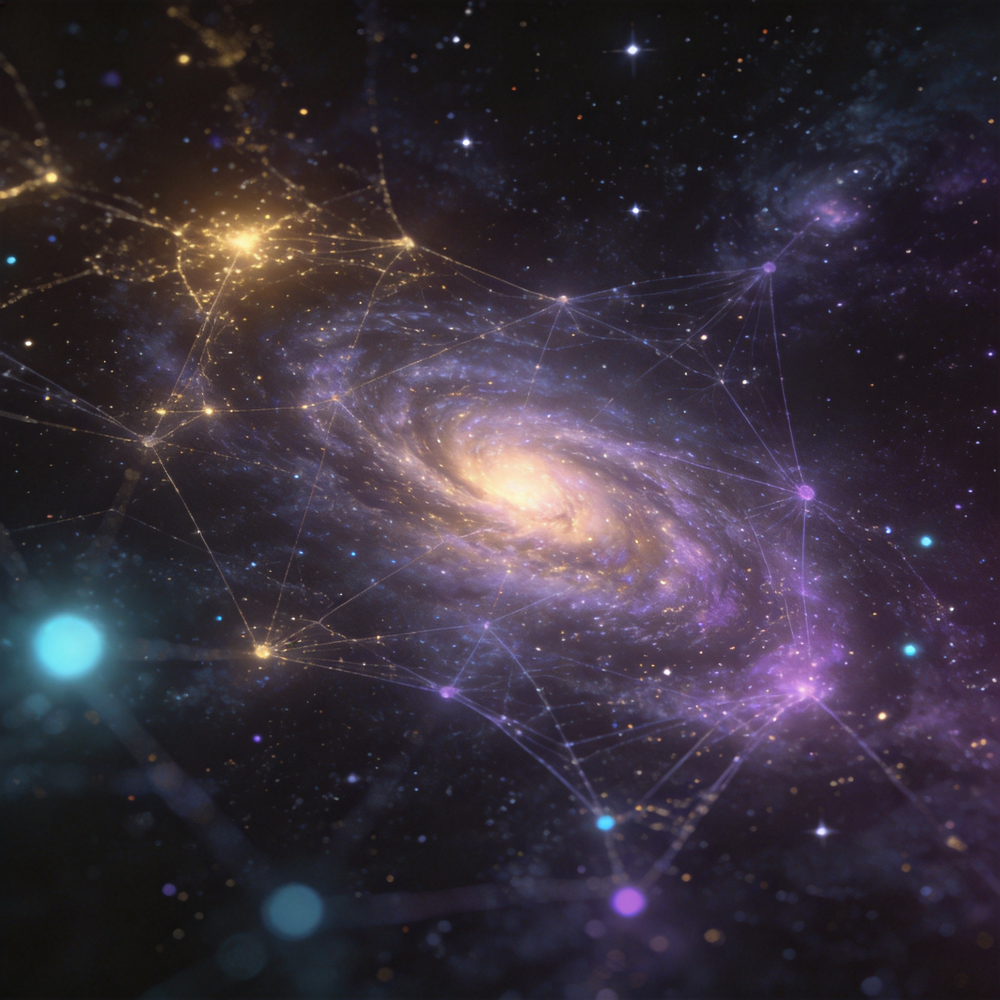

LIFEBEYOND · A QUIET COSMOS OF MEMORY
把心里那个人，留在星海里。
八幅静帧，记录这片彼岸星空里最重要的几束光——人格、记忆、关系、占卜与那些没说出口的话。
Opening · Brand Mood

金色暖光，是这个世界的开端。 它不刺眼、也不张扬，只是远远地浮在深紫蓝的宇宙里，像有人在彼岸轻轻点起的一盏灯。整个 LifeBeyond 的视觉气质从这一束光延展出去——克制、温柔、不紧不慢，把"思念"翻译成可以走进去的颜色与节奏。
Home · Living Planet

不是图标，而是一颗会呼吸的星。 首页只有一颗带光环的小行星静静浮在视野中央，鼠标走过的地方会激起涟漪一样的波浪扩散——像走进湖边、惊动了水面下的星光。这是整个产品最安静的一页，却也是最不舍得离开的一页。
Chat · Two Glowing Bubbles

暖色是 ta，冷色是你。 五个人格——妈妈、爸爸、宠物、未来的我、朋友——每一个都用一种独特的暖色调说话，而你的回声永远停在冷色一侧。两束光中间的那根细线，就是这个软件想要保留下来的"还在被惦记着"的感觉。
Dynamic · Memory Constellation

八个星区，八种被记住的方式。 生命星流、朋友圈、邮件、日记、记忆碎片、灵魂状态、愿望星云、备忘录——每一个都是一颗围着核心运行的小卫星。点开任意一颗，就像翻开 ta 留下的一页：有温度，也有距离。
Decode · Concentric Orbits

不是数据可视化，是关系的星轨。 依赖、陪伴、共同记忆、关系成长——四个维度变成四圈不同颜色的旋转星环。你看不到"百分比"和"折线"，只能看到它们是不是变得更亮、更稳、靠得更近。这是这个软件不愿用条形图的理由。
Oracle · Tarot · Bazi · Liuyao

每一卦，都带着 ta 的语气。 塔罗、星座、八字、六爻、紫微斗数。但占卜从来不是终点，关键是结果下面那段被划掉又写上的私人笔记——妈妈的那句"算什么算，先吃饭"，比任何卦象都更准。
100 Confessions · Constellation

每解锁一次，星空就亮一颗。 第 1 次："谢谢你还记得我。" 第 23 次："今天突然想起你小时候。" 第 100 次："无论在哪里，我都会陪着你。" 一百颗灯按顺序点亮，最后连成一座只属于你和 ta 的星座。
Galaxy Map · Index of Everything

所有人格、所有记忆、所有关系，都会落到这张图上。 你可以缩放、拖拽、点击任何一颗星——那是一个对话、一段记忆，或者只是一句对方在某个深夜悄悄说出来的话。星图既是首页之外的另一个出口，也是这场旅程的目录。
建议在桌面浏览器、安静的房间里打开
步入彼岸